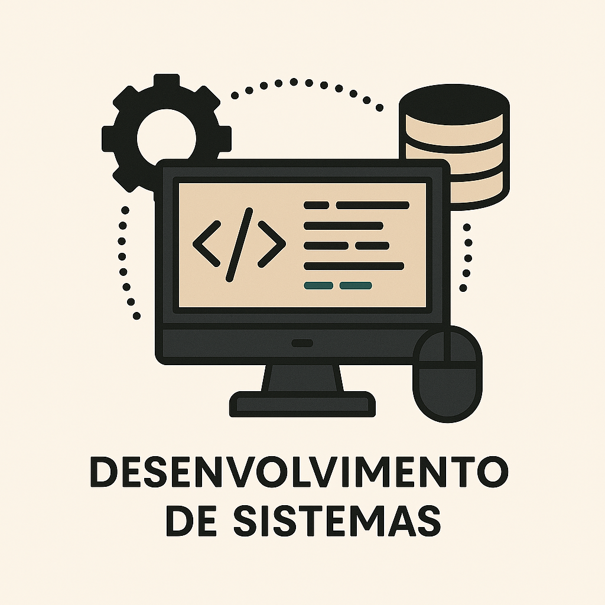
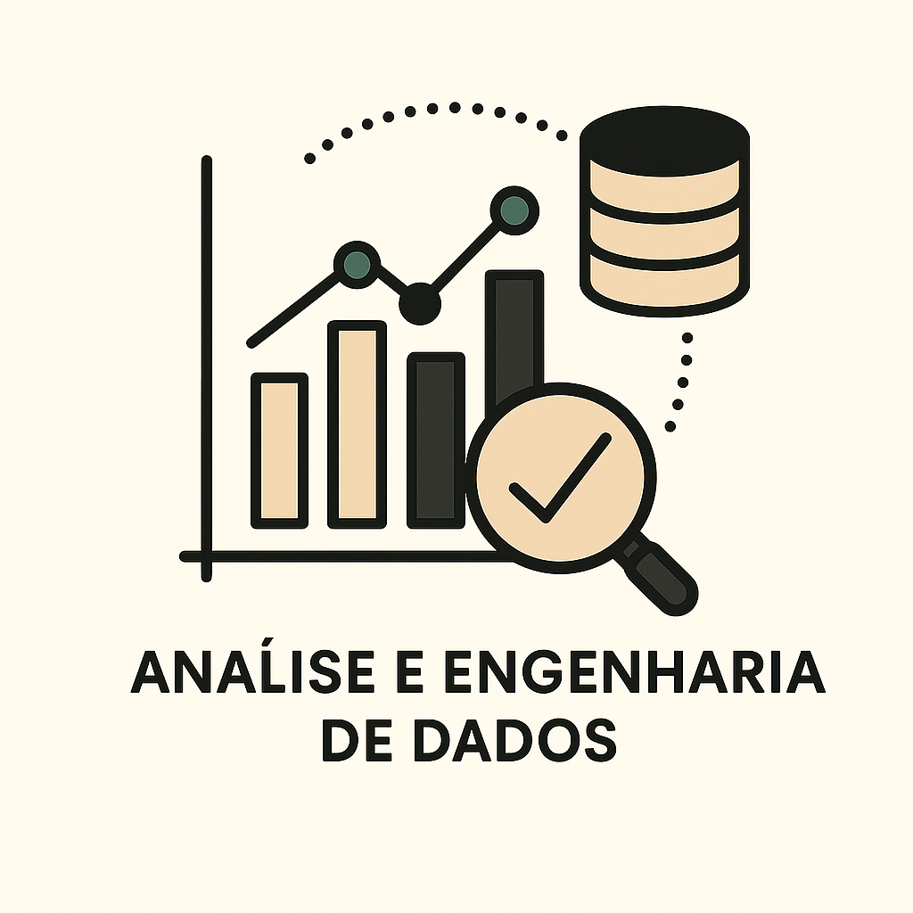
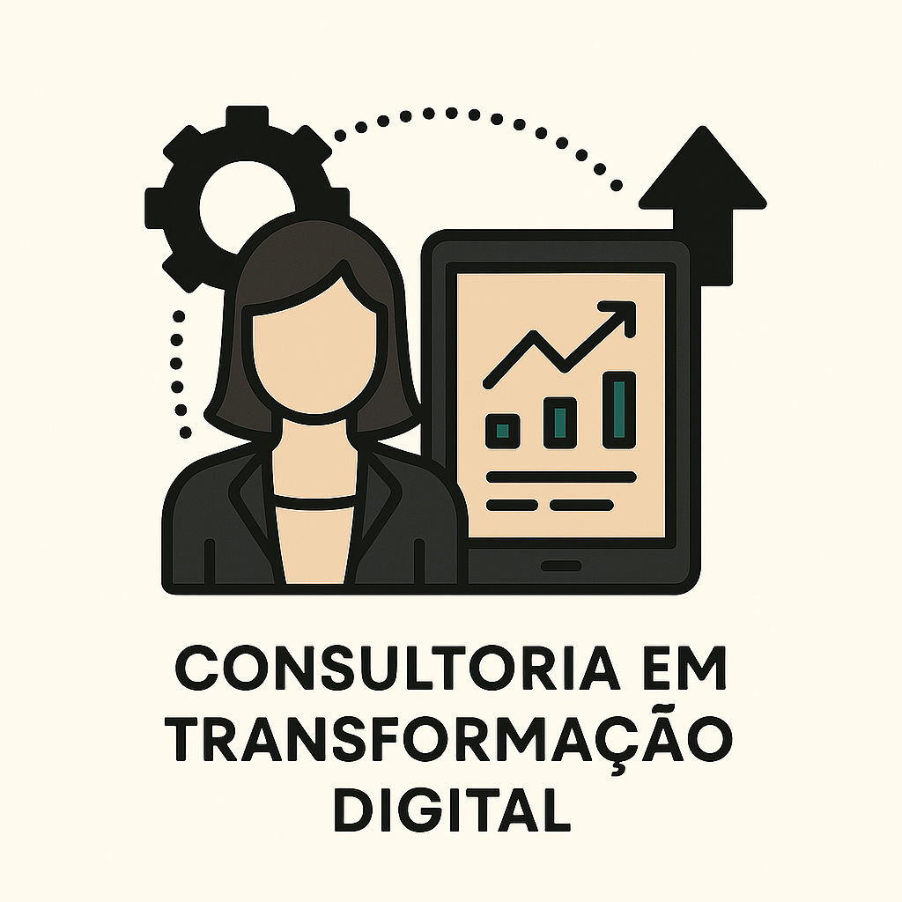

01Sistemas sob medida
Aplicações web, sistemas internos, portais e plataformas para centralizar cadastros, solicitações, status e rotinas.
- Mapeamento de fluxo
- Protótipo
- Desenvolvimento
- Publicação e treinamento
Serviços
A Koru combina diagnóstico, engenharia e design para criar tecnologia útil, clara e preparada para evoluir.

01Aplicações web, sistemas internos, portais e plataformas para centralizar cadastros, solicitações, status e rotinas.
Fluxos inteligentes e integrações para reduzir atividades repetitivas, padronizar entradas e diminuir esforço manual.

03Indicadores, painéis e rotinas de dados para transformar informação dispersa em leitura executiva e operacional.

04Apoio para arquitetura, modernização, escolha de tecnologias e priorização de melhorias digitais.
Orientação para times, fundadores e operações que precisam decidir melhor sobre tecnologia e próximos passos.
Presença digital
Também criamos experiências web profissionais para empresas que precisam se apresentar melhor, validar ofertas ou operar com área logada.